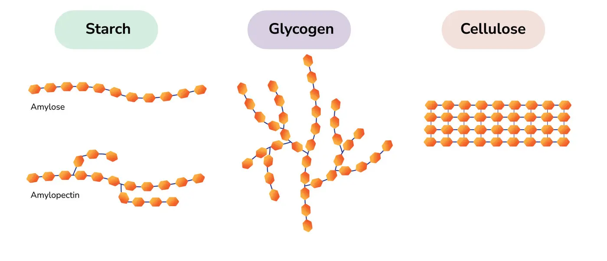
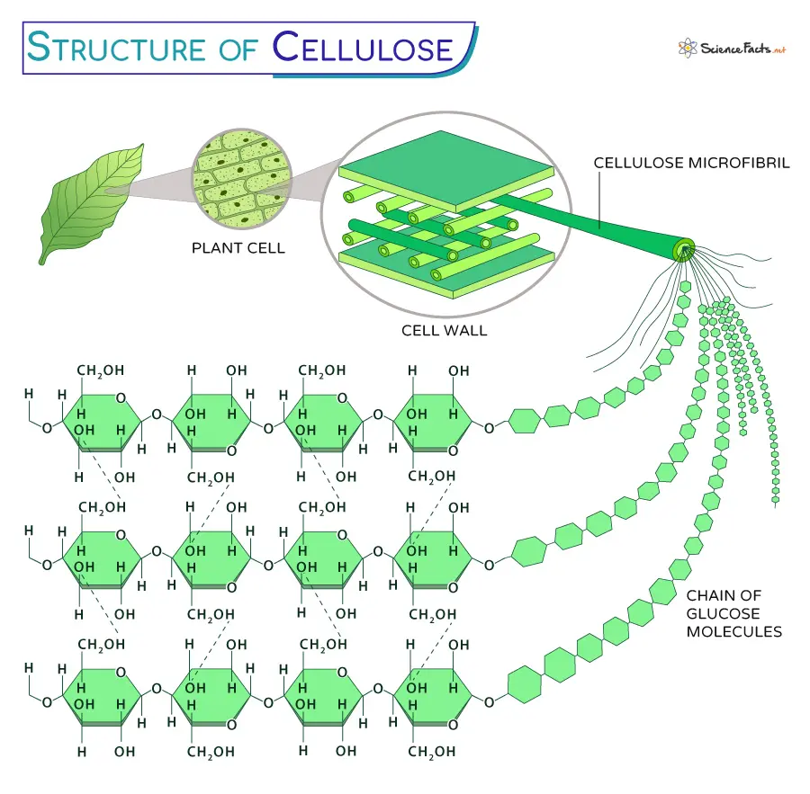
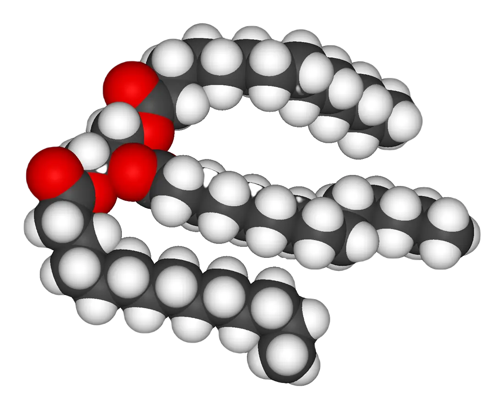
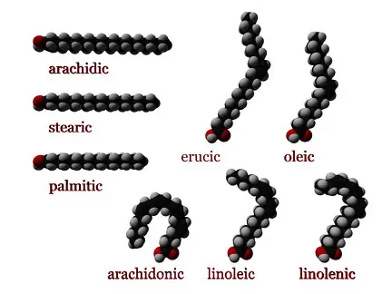
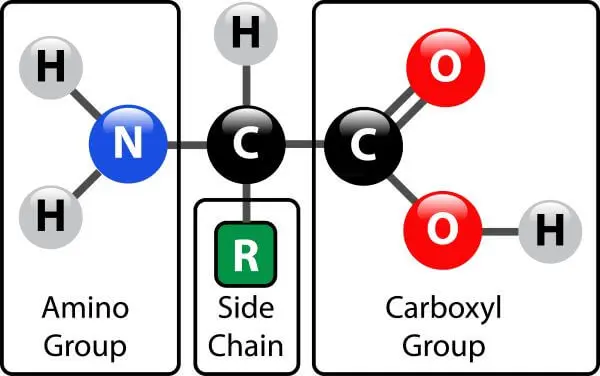
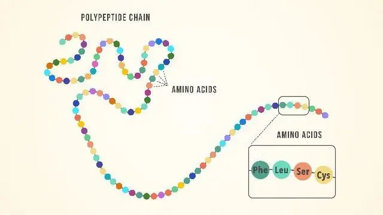
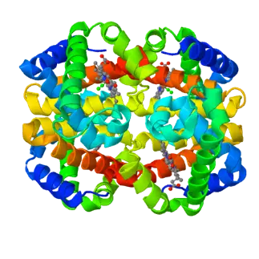
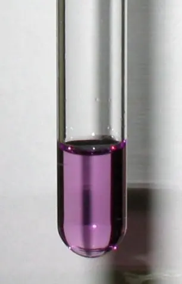
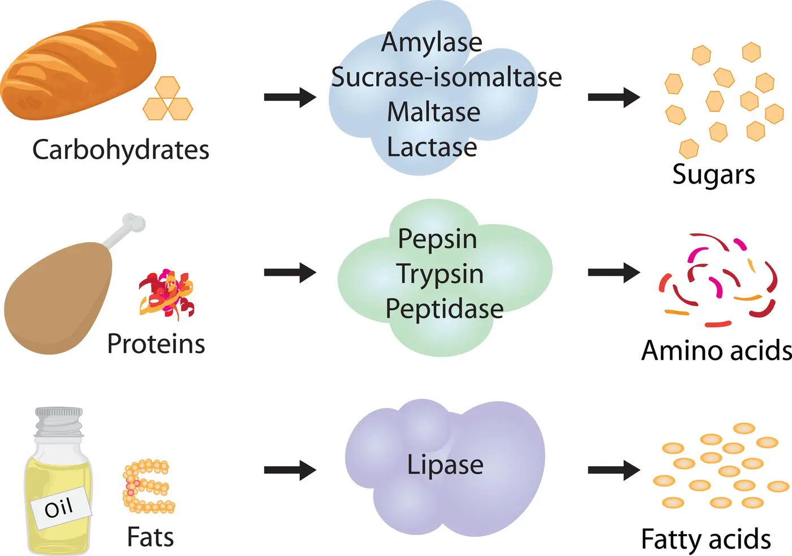

Classroom Projector Deck
1600×900 interactive presentation for the board (spec 2.7–2.13). Click Start presentation below, or press F once presenting for full screen.
1600×900 interactive presentation for the board (spec 2.7–2.13). Click Start presentation below, or press F once presenting for full screen.
Which elements are found in proteins but not in carbohydrates?
What are proteins made from?
Which test solution is used to test for glucose?
What is the positive result of the biuret test?
How do animals store carbohydrate?
What happens to an enzyme above its optimum temperature?
Describe how you would test a food sample for starch and for glucose.
Explain why the rate of an enzyme-controlled reaction falls when the temperature is raised above the optimum.
















| Molecule | Test solution | Starts | Positive |
|---|---|---|---|
| Starch | Iodine | ||
| Glucose | |||
| Protein | blue | ||
| Lipid (fat) | cloudy white emulsion |

| Molecule | Test solution | Starts | Positive result |
|---|---|---|---|
| Starch | Iodine | yellow-brown | blue-black |
| Glucose | Benedict’s | blue | green → orange → brick red |
| Protein | Biuret | blue | purple / lilac |
| Lipid (fat) | Ethanol, then water | clear | cloudy white emulsion |


